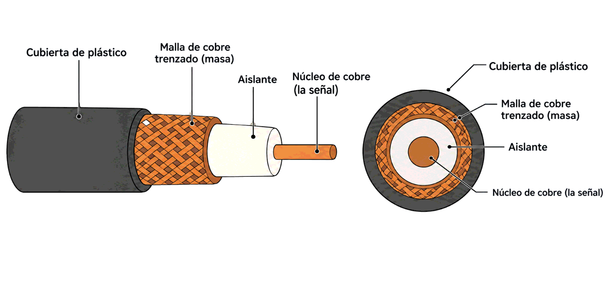
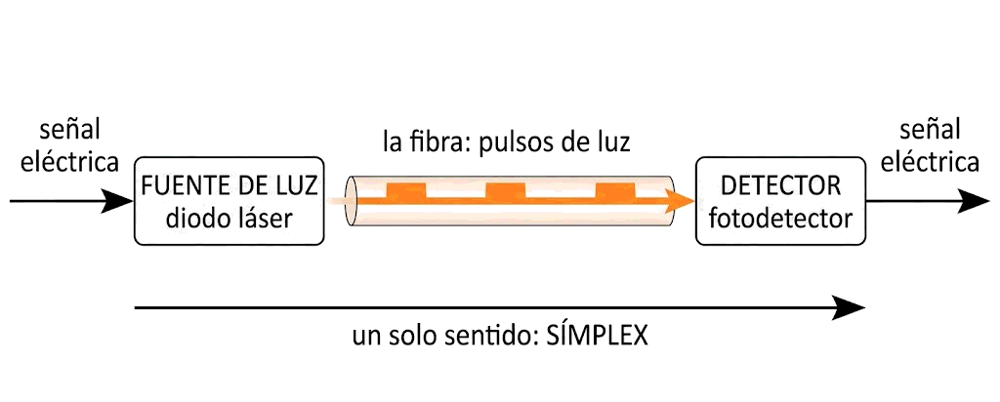
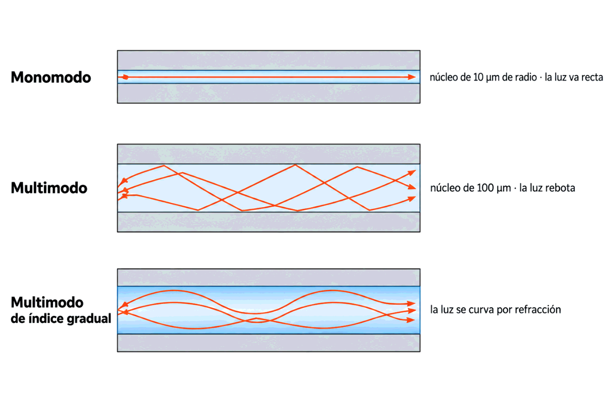
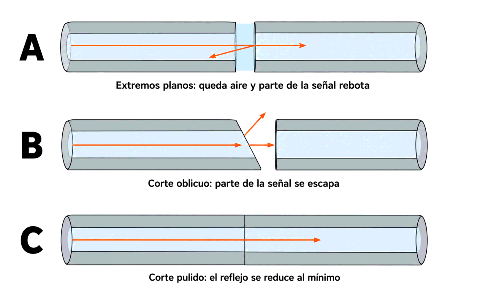

Contenido del día
- El cable coaxial: estructura
- Banda base y banda ancha
- Coaxial grueso y coaxial fino
- Un sistema de transmisión óptico
- Monomodo, multimodo e índice gradual
- Cómo se agrupan las fibras en un cable
- Las tres formas de unir dos fibras
- Ventajas de la fibra frente al cobre
- Conectores y recomendaciones de montaje
- El presupuesto óptico
- Resumen y errores frecuentes
- Repaso con flashcards
- Quiz del día
1. El cable coaxial: estructura
El coaxial tiene mejor blindaje que el par trenzado, y de ahí se derivan sus dos ventajas: alcanza velocidades mayores y permite tramos más largos entre repetidores o estaciones.
Su estructura son cuatro capas concéntricas —de ahí el nombre: todas comparten el mismo eje—:
| Capa | De qué es | Para qué sirve |
|---|---|---|
| 1. Núcleo | Alambre de cobre duro | Por él circula la señal |
| 2. Aislante | Material dieléctrico | Separa el núcleo de la malla y mantiene la distancia constante |
| 3. Malla | Conductor cilíndrico de cobre trenzado | Hace de masa y envuelve por completo a la señal |
| 4. Cubierta | Plástico protector | Protege mecánicamente el conjunto |

cubierta de plástico
┌───────────────────────┐
│ ▒▒▒ malla de cobre ▒▒▒│ ← masa: rodea toda la señal
│ ░░░░ aislante ░░░░░ │
│ ░░░░░░ ●núcleo ░░░░░ │ ← por aquí va la señal
└───────────────────────┘Esta construcción le da un elevado ancho de banda y una excelente inmunidad al ruido. En el par trenzado la protección es un truco geométrico: las interferencias se cancelan. Aquí es directa: la malla envuelve a la señal y actúa como escudo en los 360 grados.
Sobre su velocidad, el libro da una cifra concreta y una condición: depende de la longitud, y en cables de 1 km es posible obtener entre 1 y 2 Gbps.
El coaxial se usaba en el sistema telefónico como conexión de gran capacidad y largo recorrido, pero ahí lo ha sustituido la fibra. Sigue vivo en dos sitios: la televisión por cable y el acceso a redes de área extensa. Si tienes Internet por cable coaxial en casa, estás usando esta tecnología; se verá en el Mes 11.
2. Banda base y banda ancha
Hay dos tipos fundamentales de coaxial, y lo que los separa es el tipo de señal que transportan:
| Coaxial de banda base | Coaxial de banda ancha | |
|---|---|---|
| Transmisión | Digital | Analógica |
| Velocidad típica | Hasta 10 Mbps en cables de 1 km; más en cables cortos | Hasta 150 Mbps en un cable que funcione a 300 MHz |
| Distancia | Se reduce la velocidad al alargar el cable | Hasta 100 km, gracias a la naturaleza analógica de la señal |
| Uso | Redes de área local y transmisiones de larga distancia | Televisión por cable |
Fíjate en la última fila: la señal analógica aguanta 100 km y la digital, no. Es contraintuitivo después de la Semana 1, donde lo digital ganaba por poder regenerarse. Y es que la regeneración es una ventaja del equipamiento, no del cable: en un enlace analógico basta con amplificar, aunque se amplifique también el ruido.
3. Coaxial grueso y coaxial fino
Dentro del coaxial de banda base, el libro distingue por grosor. Las medidas son las del núcleo y la malla:
| Tipo | Referencia | Núcleo | Malla | Diámetro total | Notas |
|---|---|---|---|---|---|
| Grueso | RG-100 | 2,6 mm | 9,5 mm | ≈ 1 cm | El más utilizado de los gruesos |
| RG-150 | 3,7 mm | 13,5 mm | ≈ 1,5 cm | Capas trenzadas que protegen mejor de las interferencias | |
| Fino | RG-58 (RG-58/U en España) | 1,2 mm | 4,4 mm | ≈ 0,5 cm | Más flexible y fácil de instalar, pero más caro y con menor inmunidad |
El coaxial grueso empezó usándose en redes locales y hoy solo se emplea para la estructura troncal de distribución de la red.
El coaxial fino es más caro que el grueso, pese a llevar menos material. Se paga la flexibilidad: es más fácil de instalar. Es el mismo patrón que viste el lunes con el par trenzado, donde el coste del montaje pesa más que el del metro de cable.
4. Un sistema de transmisión óptico
La fibra óptica transmite información binaria con ondas de luz. Un sistema óptico tiene siempre tres componentes:
| Componente | Qué hace | Con qué se construye |
|---|---|---|
| 1. Fuente de luz | Convierte la señal eléctrica en señal óptica: un pulso de luz para el 1 y ausencia de luz para el 0, o bien un cambio de longitud de onda | Un emisor láser, habitualmente un diodo láser |
| 2. Medio de transmisión | Transporta la luz | Una fibra de vidrio ultradelgada |
| 3. Detector | Genera un pulso eléctrico cuando la luz incide sobre él | Un fotodetector o una fotorresistencia |

señal ┌────────┐ luz ┌────────┐ señal
eléctrica ──▶│ fuente │ ~~~~~~~~~~~~▶ │detector│ ──▶ eléctrica
└────────┘ la fibra └────────┘
un solo sentido: SÍMPLEXLa estructura de la fibra
Es un cilindro flexible de sección muy pequeña —del orden de 2 a 125 µm— formado por tres envolturas:
| Parte | Función |
|---|---|
| Núcleo | Por él circula la luz |
| Revestimiento | Tiene un índice de refracción menor que el núcleo, de modo que la luz rebota hacia dentro y no escapa |
| Cubierta plástica | Protege el revestimiento e impide que entre luz del exterior |
Un cabello humano tiene alrededor de 50 µm. La fibra entera, con su revestimiento, ronda los 125 µm: poco más del doble de un pelo.
5. Monomodo, multimodo e índice gradual
La luz puede propagarse por la fibra de tres formas, según cómo esté construido el núcleo:
| Tipo | Cómo viaja la luz | Núcleo | Cubierta |
|---|---|---|---|
| Monomodo | La fibra es tan delgada que la luz va en línea recta | radio de 10 µm | 125 µm |
| Multimodo | La luz rebota en la superficie interna del núcleo, como en un espejo. Las pérdidas siguen siendo casi nulas | diámetro de 100 µm | 140 µm |
| Multimodo de índice gradual | La luz se curva suavemente, por refracción gradual: el índice de refracción del núcleo aumenta del centro hacia los extremos | El mismo diámetro que la multimodo | |

Monomodo ───────────────────────▶ un solo camino, recto
Multimodo ╲ ╱╲ ╱╲ ╱╲ ╱╲ ╱▶ rebota, varios caminos
╲╱ ╲╱ ╲╱ ╲╱ ╲╱
Índice gradual ╲__╱‾‾╲__╱‾‾╲__╱▶ se curva, sin rebotarEn la multimodo cada rayo recorre una distancia distinta, así que los que rebotan mucho llegan más tarde que los que van casi rectos. Un pulso que salió nítido llega ensanchado, y si se ensancha demasiado se solapa con el siguiente: es el límite de velocidad y distancia de la multimodo. La monomodo no tiene ese problema porque solo hay un camino, y el índice gradual lo reduce curvando los rayos en lugar de rebotarlos.
Esa es la razón de fondo de la regla que ya conocías del Mes 1: monomodo para largas distancias, multimodo para dentro del edificio.
6. Cómo se agrupan las fibras en un cable
Un cable de fibra lleva varias fibras dentro, cada una transmitiendo en un sentido. Hay dos formas de montarlas, y la elección depende de dónde va a instalarse:
| Cable holgado (Loose Tube) | Recubrimiento ajustado (Tight buffered) | |
|---|---|---|
| Construcción | Un único revestimiento para todas las fibras, con una capa de gel contra la humedad | Cada fibra con su propio recubrimiento |
| Coste por metro | Menor | Mayor |
| Coste de conectores y empalmes | Mayor | Menor |
| Flexibilidad | Muy limitada | Buena |
| Dónde se usa | Exterior | Interior de edificios |
Otra vez el mismo patrón: lo barato por metro sale caro en el montaje, y al revés. Para un tendido largo entre edificios compensa el holgado; para repartir por dentro, donde hay muchas terminaciones y muchas curvas, el ajustado.
7. Las tres formas de unir dos fibras
Aquí está el verdadero problema de la fibra. El libro lo dice sin rodeos: su inconveniente principal es el coste, y no tanto el precio del metro como el del montaje. La fibra no se puede doblar demasiado y las conexiones son caras y complicadas. Tanto, que muchas veces sale más rentable desechar varios kilómetros de fibra que hacer una unión de varios tramos.
| Forma de unión | En qué consiste | Pérdida de luz |
|---|---|---|
| Conectores | Cada tramo viene de fábrica con enchufes en los extremos. Es lo más sencillo | Entre el 10 % y el 20 % |
| Empalme mecánico | Se cortan con cuidado los dos extremos y se unen con una manga que los sujeta. La alineación se puede afinar pasando luz y ajustando | En torno al 10 % |
| Fusión | Se funden los dos extremos hasta formar una conexión sólida | Casi tan buena como una fibra de hilado único: solo un poco de atenuación |
De menos a más pérdida: fusión → empalme mecánico → conectores. Y de menos a más comodidad, justo al revés. Los conectores permiten desconectar y reconfigurar; una fusión es para siempre.
El corte de los extremos
Antes de unir nada hay que cortar y pulir los extremos. El libro muestra tres situaciones:
| Caso | Qué pasa |
|---|---|
| A. Dos extremos planos enfrentados | Queda una zona intermedia de aire: parte de la señal rebota y vuelve al origen |
| B. Corte oblicuo | Parte de la señal se escapa y se pierde |
| C. Corte perfectamente pulido | Minimiza el reflejo: es el objetivo |

A ═══════╡ aire ╞═══════ parte rebota y vuelve
B ═══════╱ ╞═══════ parte se escapa
C ═══════╪══════════════ pasa casi toda: es el objetivo8. Ventajas de la fibra frente al cobre
El libro enumera cinco. Conviene sabérselas porque son las que justifican su precio:
- Maneja anchos de banda mucho mayores que el cobre.
- Por su baja atenuación, solo necesita repetidores cada 30 km; el cobre los necesita cada 5 km.
- No la interfieren las ondas electromagnéticas.
- Es delgada y ligera comparada con un cable de cobre de la misma capacidad.
- No tiene fugas y es muy difícil de intervenir: habría que cortar el cable o desviar parte de la luz, y eso exige equipos muy costosos.
Todo lo del lunes y el martes —trenzar, apantallar, poner a tierra, no destrenzar— existe para pelear contra las interferencias electromagnéticas. En la fibra ese problema no existe: por ahí viaja luz, y la luz no se induce en un cable vecino. Por eso la fibra es la respuesta cuando el entorno es eléctricamente hostil, aunque la distancia sea corta.
Ese techo ha quedado desfasado: hoy es normal encontrar transceptores comerciales de 10, 40, 100 y 400 Gbps. La idea del libro sigue siendo válida —quien limita no es la fibra, sino la electrónica de los extremos—, pero la cifra concreta no. Este matiz no sale de la bibliografía de la asignatura, sino de los estándares actuales de IEEE 802.3.
9. Conectores y recomendaciones de montaje
Según la norma ANSI/EIA/TIA-568, los conectores de fibra son los 568SC, símplex o dúplex. Los dúplex montan dos fibras: una para transmitir y otra para recibir. El libro muestra los tipos SC y ST.
- Azul → conectores y adaptadores monomodo.
- Beige → multimodo.
No es decorativo: mezclar una fibra monomodo con una multimodo en el mismo enlace pierde casi toda la luz en el punto de unión.
Las recomendaciones de montaje del libro son seis:
- Los conectores alojarán dos fibras, una de transmisión y otra de recepción, del mismo tipo y grosor. Si se usan modos distintos, hay que etiquetarlos.
- Los latiguillos de los paneles se montan de forma que el extremo de transmisión conecte con el de recepción del otro lado, y al revés. Cada fibra se etiqueta con su sentido.
- Los armarios deben dejar hueco para un radio de curvatura mínimo de 25 mm.
- Conectores beige para multimodo y azules para monomodo.
- Cortar y pulir los extremos antes de montar los conectores, evitando ángulos y aristas.
- Mantener los conectores cubiertos con sus fundas mientras no estén conectados.
💡 Ampliación: el conector LC, que el libro no menciona
No sale de la bibliografía de la asignatura, pero te lo vas a encontrar en cuanto abras un armario moderno. El LC es hoy el conector más habitual en equipos de red: hace lo mismo que el SC pero con la mitad de tamaño, lo que permite el doble de puertos en el mismo frontal de switch.
| Conector | Tamaño | Dónde se ve |
|---|---|---|
| ST | Grande, con bayoneta de giro | Instalaciones antiguas |
| SC | Cuadrado, de empujar y tirar | El de la norma TIA-568; paneles y acometidas |
| LC | La mitad que el SC | Transceptores SFP de switches y servidores |
El código de colores azul y beige se mantiene en todos ellos.
10. El presupuesto óptico
Ya sabes que cada unión pierde luz. La pregunta práctica es: con toda esa pérdida acumulada, ¿llega bastante luz al otro extremo? Eso se calcula antes de instalar nada, y se llama presupuesto óptico.
Se trabaja en decibelios, y no en porcentajes, por la razón que ya conoces: los dB se suman en lugar de multiplicarse. Valores típicos de referencia:
| Elemento | Pérdida típica |
|---|---|
| Fibra multimodo, por kilómetro | 3 dB/km |
| Fibra monomodo, por kilómetro | 0,4 dB/km |
| Cada par de conectores | 0,75 dB |
| Cada empalme por fusión | 0,3 dB |
| Margen de seguridad recomendado | 3 dB |
- Suma las pérdidas: fibra × km, más conectores, más empalmes.
- Añade el margen de seguridad.
- Compara con el presupuesto del transceptor: la diferencia entre la potencia que emite y la mínima que su receptor necesita.
Si la pérdida total es menor que ese presupuesto, el enlace funciona. Si es mayor, hay que cambiar de fibra, de transceptor o de recorrido.
Un ejemplo completo: 2 km de fibra monomodo, dos pares de conectores y un empalme por fusión.
fibra 2 km × 0,4 dB/km = 0,8 dB
conectores 2 × 0,75 dB = 1,5 dB
empalme 1 × 0,3 dB = 0,3 dB
───────
2,6 dB
margen + 3,0 dB
───────
pérdida a considerar 5,6 dBSi el transceptor emite a −8 dBm y su receptor necesita al menos −20 dBm, dispone de 12 dB de presupuesto. Como 5,6 < 12, el enlace llega con holgura. Esto es exactamente lo que harás en el laboratorio.
11. Resumen y errores frecuentes
- Coaxial: núcleo, aislante, malla y cubierta. La malla envuelve la señal, de ahí su excelente inmunidad. En 1 km, entre 1 y 2 Gbps.
- Banda base es digital, hasta 10 Mbps en 1 km. Banda ancha es analógica, hasta 150 Mbps y 100 km: televisión por cable.
- Grueso: RG-100 y RG-150. Fino: RG-58, más flexible y más caro.
- Sistema óptico: fuente, medio y detector. Una fibra es símplex.
- Monomodo: recta, núcleo de 10 µm de radio. Multimodo: rebota, núcleo de 100 µm. Índice gradual: se curva.
- Holgado para exterior, ajustado para interior.
- Uniones: conectores 10-20 %, empalme mecánico 10 %, fusión casi sin pérdida.
- Colores: azul monomodo, beige multimodo. Radio de curvatura mínimo, 25 mm.
- El presupuesto óptico suma en dB fibra, conectores, empalmes y margen, y lo compara con lo que da el transceptor.
| Se dice… | …pero en realidad |
|---|---|
| «Banda ancha significa conexión rápida» | En redes significa transmisión analógica. Es un término heredado de la telefonía |
| «El coaxial fino es más barato porque lleva menos cobre» | Es más caro: se paga su flexibilidad y su facilidad de instalación |
| «La multimodo es mejor porque la luz aprovecha más caminos» | Al revés: los rayos llegan con retraso distinto y el pulso se ensancha. La monomodo llega más lejos |
| «Una fibra transmite en los dos sentidos» | Una fibra es símplex. Hacen falta dos, y por eso los conectores son dúplex |
| «Lo caro de la fibra es el cable» | Lo caro es el montaje: conexiones y empalmes. A veces sale mejor tirar kilómetros nuevos |
| «Los conectores son la mejor forma de unir dos fibras» | Son la más cómoda y la que más pierde: del 10 al 20 %. La fusión es la mejor |
| «Un cable de fibra se puede doblar como uno de cobre» | Por debajo del radio de 25 mm la luz se escapa por la curva y la fibra puede romperse por dentro |
| «Da igual el color del conector» | Azul y beige distinguen monomodo de multimodo, y mezclarlos arruina el enlace |
12. Repaso con flashcards
Piensa la respuesta antes de girar la tarjeta.
Quiz del día
15 preguntas · 22 minutos · Contesta sin volver a la teoría
El cronómetro no corre mientras lees: arranca al llegar aquí, al pulsar «Empezar quiz» o al marcar tu primera respuesta.
Resultados
Respuestas correctas: 0 / 0
Respuestas incorrectas: 0
Vas a calcular tres enlaces de fibra en decibelios y a decidir cuáles llegan y cuáles no. Uno de ellos no llega: habrá que averiguar qué cambiar.
→ Ir al laboratorio del Día 3 (68 min)
Elegir el medio: las dos tablas comparativas del libro, la seguridad eléctrica del cableado de cobre y un caso completo de diseño para una nave con cuatro tramos distintos.
Tarea de calentamiento (5 min): si la fibra es mejor en casi todo, ¿por qué tu equipo sigue conectado con cobre? Escribe dos razones.